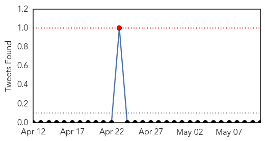
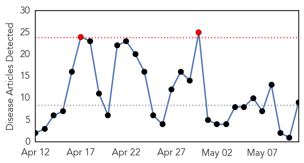
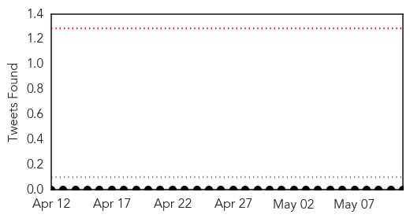

Cholera
30-Day Web Trend
0 alerts, 1 warnings

30-Day Twitter Trend
0 alerts, 0 warnings

Article Locations

Article Confidences

Top Articles:
Top Tweets:
-
No tweets found for May 11, 2015
Measles
30-Day Web Trend
2 alerts, 0 warnings

30-Day Twitter Trend
0 alerts, 0 warnings

Article Locations

Article Confidences

Top Articles:
- 0.964
- VP Boakai Launches Measles, Polio and Deworming Campaign
- 0.885
- Measles case in MidCentral DHB area
- 0.848
- Vaccine debate pours into Augusta as lawmakers consider new requirements — Politics — Bangor Daily News — BDN Maine
- 0.845
- In brief: LECOM wound center earns award
- 0.781
- Rise in measles cases seen in Negros Occidental
- 0.759
- Measles virus weakens immunity for years after infection
- 0.720
- Nepal earthquake: Emergency measles immunization campaign for hundreds of thousands of children at risk–UNICEF
- 0.699
- Children's immune system weakened for up to 3 years after measles infection
- 0.517
- Djibouti launches a life-saving immunisation campaign - Djibouti
Top Tweets:
-
No tweets found for May 11, 2015